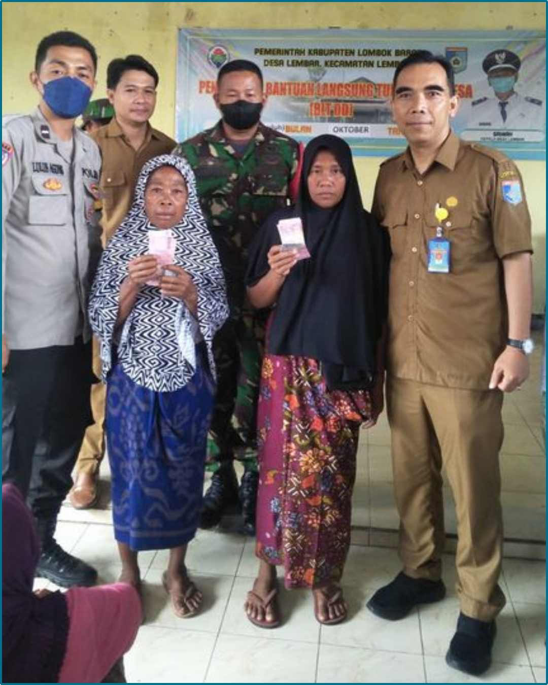
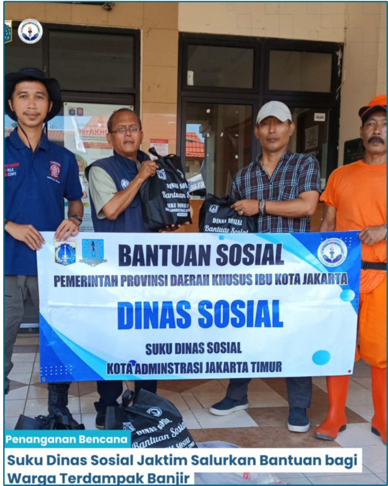
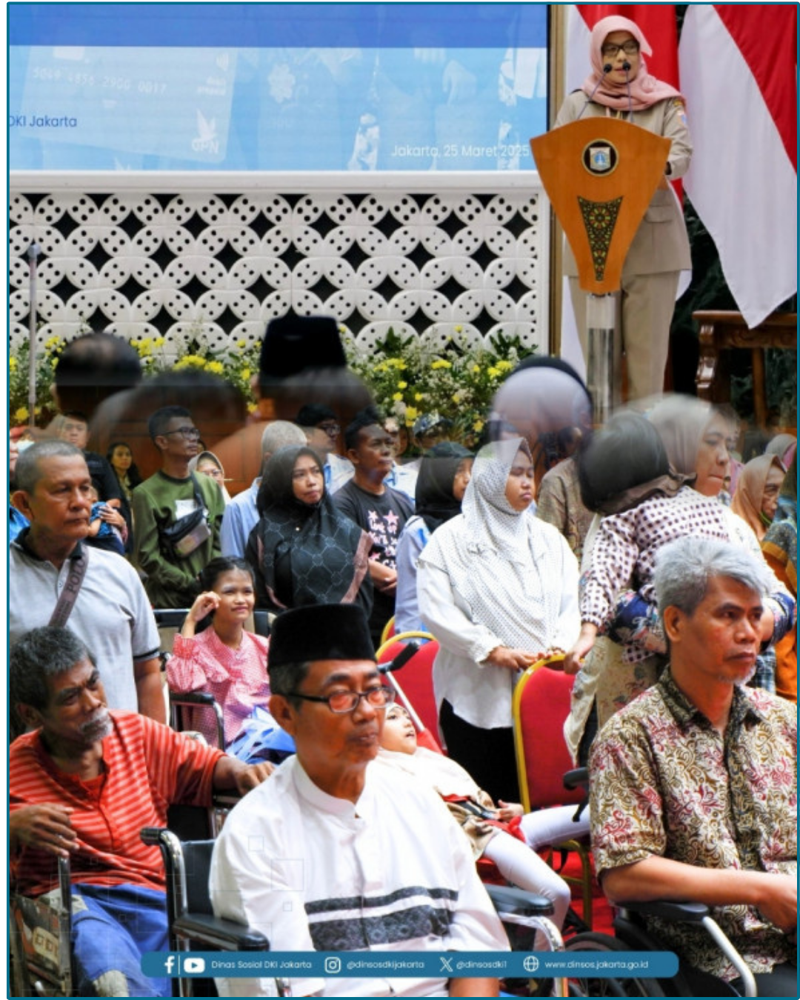
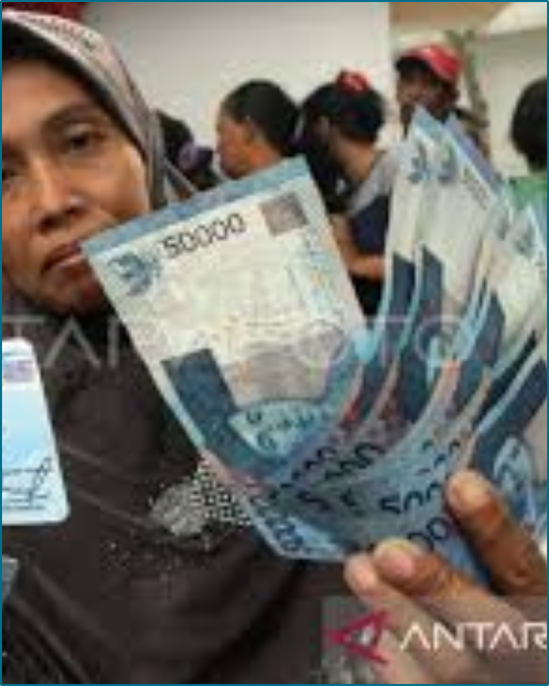
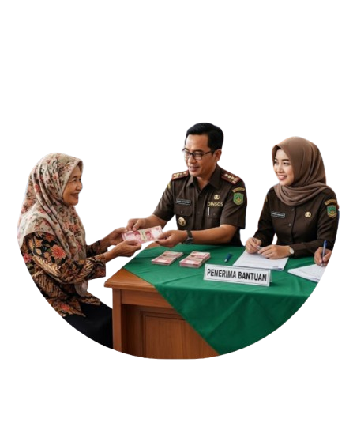
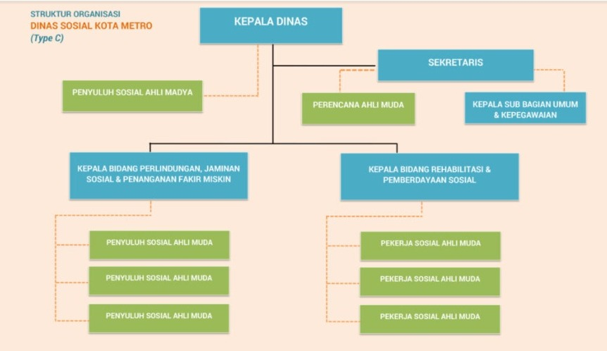
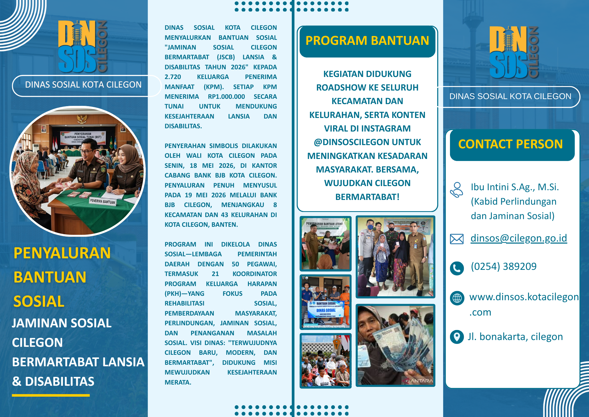

Dokumentasi Kegiatan
Klik gambar untuk memperbesar





Jaminan Sosial Cilegon Bermartabat (JSCB) Lansia & Disabilitas Tahun 2026
Lihat Berita
Pelayanan Sosial Untuk Masyarakat Kota Cilegon
"Terwujudnya Cilegon Baru, Modern, dan Bermartabat"
Dinas Sosial Kota Cilegon

Klik gambar untuk memperbesar
Cilegon, 4 Mei 2026 — Dinas Sosial Kota Cilegon menyalurkan bantuan sosial "Jaminan Sosial Cilegon Bermartabat (JSCB) Lansia & Disabilitas Tahun 2026" kepada 2.720 Keluarga Penerima Manfaat (KPM).
Penyerahan simbolis disaksikan Wali Kota Cilegon pada 18 Mei 2026 di Kantor Cabang Bank BJB Kota Cilegon, dan penyaluran penuh diselesaikan pada 19 Mei 2026 melalui Bank BJB Cilegon. Setiap KPM menerima bantuan sebesar Rp1.000.000.
Program ini bertujuan meningkatkan kesejahteraan lansia dan penyandang disabilitas melalui bantuan tunai yang disalurkan setelah proses verifikasi data.
Baca SelengkapnyaDinas Sosial bertanggung jawab atas registrasi, verifikasi, dan koordinasi distribusi bekerja sama dengan Bank BJB Cabang Cilegon.
Pelaksanaan lapangan melibatkan 21 Koordinator Program Keluarga Harapan (PKH) serta staf dinas pada tingkat kecamatan dan kelurahan.
Dinas Sosial Kota Cilegon mengelola layanan sosial daerah meliputi rehabilitasi sosial, pemberdayaan masyarakat, perlindungan dan jaminan sosial, kebencanaan serta penanganan masalah sosial.
Untuk meningkatkan jangkauan informasi, Dinas Sosial menggelar roadshow ke 8 kecamatan dan 43 kelurahan serta memproduksi konten kampanye melalui Instagram @dinsoscilegon.
Bantuan sosial untuk meningkatkan kesejahteraan lansia.
Dukungan dan perlindungan sosial bagi penyandang disabilitas.
Setiap KPM menerima bantuan Rp1.000.000.
Klik gambar untuk memperbesar




Publikasi Resmi Dinas Sosial Kota Cilegon

Program Bantuan Sosial Lansia dan Disabilitas Tahun 2026.
Kabid Perlindungan dan Jaminan Sosial
dinsos@cilegon.go.id
(0254) 389209
Kota Cilegon, Banten